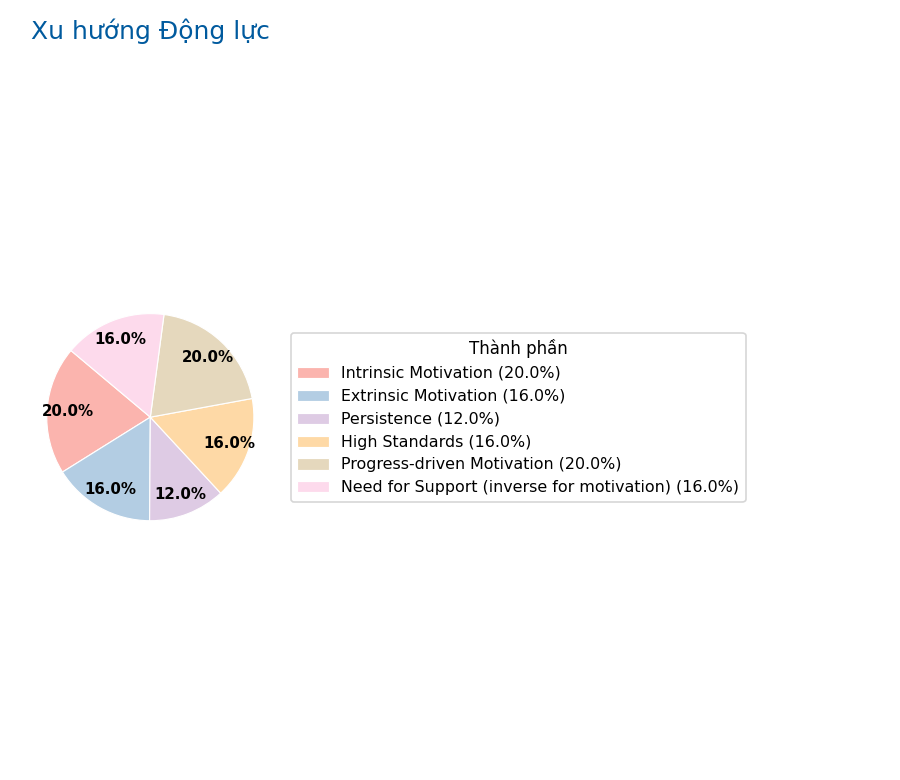

Báo Cáo Tự Đánh Giá Cá Nhân
Người thực hiện: 123
Ngày tạo báo cáo: 2025-05-29 16:34:31
Tổng Quan Năng Lực & Các Khía Cạnh Chính
Bản đồ các khía cạnh

Điểm số chi tiết các khía cạnh:
- Adaptability (Goals): 4.0
- Adaptability to Change: 4.0
- Autonomy: 5.0
- Awareness of Others' Perception: 5.0
- Awareness of Strengths: 4.0
- Awareness of Weaknesses: 5.0
- Bodily-Kinesthetic Int.: 3.5
- Creativity & Innovation: 4.0
- Decision Making (Comfort): 5.0
- Emotional Awareness: 4.0
- Extrinsic Motivation: 4.0
- Fairness & Equality: 4.0
- Focus & Concentration: 4.0
- Goal Clarity: 5.0
- Goal Decomposition: 4.0
- Gratitude: 5.0
- Growth Mindset: 4.0
- High Standards: 4.0
- Integrity: 3.0
- Interpersonal Intelligence: 2.5
- Intrapersonal Intelligence: 4.5
- Intrinsic Motivation: 5.0
- Linguistic Intelligence: 4.5
- Logical-Mathematical Int.: 3.5
- Meaningful Relationships: 3.0
- Musical Intelligence: 3.0
- Need for Support (inverse for motivation): 2.0
- Objective Self-Assessment: 3.0
- Openness to Feedback: 4.0
- Optimism: 4.0
- Persistence: 3.0
- Planning Ability: 4.0
- Proactive Self-Discovery: 4.0
- Progress-driven Motivation: 5.0
- Responsibility: 4.0
- Self-Efficacy (Goals): 3.0
- Self-Reflection: 3.0
- Sense of Accomplishment: 5.0
- Social Contribution: 3.0
- Spatial Intelligence: 1.5
- Stability Seeking: 5.0
- Time Management: 5.0
- Understanding Triggers: 5.0
- Value Clarity: 4.0
Điểm Nổi Bật
Điểm mạnh nổi bật:
- Stability Seeking: 5.0
- Autonomy: 5.0
- Gratitude: 5.0
- Intrinsic Motivation: 5.0
- Progress-driven Motivation: 5.0
Lĩnh vực cần chú ý/cải thiện:
- Spatial Intelligence: 1.5
- Need for Support (inverse for motivation): 2.0
- Interpersonal Intelligence: 2.5
- Objective Self-Assessment: 3.0
- Self-Reflection: 3.0
Biểu đồ điểm mạnh (ví dụ)
Phân Tích Giá Trị Cốt Lõi
Tỷ lệ các giá trị được ưu tiên:
Không có dữ liệu.
Phân Tích Xu Hướng Động Lực
Điểm số các loại động lực:
- Extrinsic Motivation: 4.0
- High Standards: 4.0
- Intrinsic Motivation: 5.0
- Need for Support (inverse for motivation): 4.0
- Persistence: 3.0
- Progress-driven Motivation: 5.0
Biểu đồ xu hướng động lực
Phản Hồi Câu Hỏi Mở
Không có phản hồi cho câu hỏi mở.